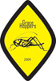
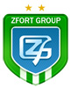

Полное освещение турнира проводится нашим информационным партнером - проектом "Харьков Футбольный":
Все команды:
AKVELON,
Ciklum,
CS,
CS-2,
Eclipse,
EPAM Systsems,
Gameloft,
Gameloft II,
GlobalLogic,
GraceHoppers,
NIX Solutions,
Random United,
Ronis,
Stella Systems,
UTeam,
Zfort Group
AKVELON
Состав:
Журба Андрей, Киргетов Александр, Леонов Иван, Макаровский Игорь, Меленцов Юрий, Петров Михаил, Рисухин Максим, Романович Ярослав, Слипченко Александр, Сотников Сергей, Федорчук Игорь, Циблиев Денис, Чапланов Алексей, Чупов Дмитрий, Шуньков Юрий
Цвет формы: оранжевый
Всего в IT-Лиге (до IV): (10,3.0) 19:+6=1-12 (48-78=-30), достижение: 15 место (3.0), в индексе Л-Г: 11 (3К)
Ciklum
Состав:
Боцман Андрей, Вдоварейзе Сергей, Дяченко Владислав, Зиненко Виталий, Кузьмин Евгений, Купин Олег, Левчук Владимир, Липовецкий Дмитрий, Матвеевский Анатолий, Почепцов Вячеслав, Салдыга Игорь, Серегин Александр, Сорока Владислав, Спесивый Дмитрий, Струков Евгений, Цыганов Александр
Цвет формы: красный
Всего в IT-Лиге (до IV): (10,3.0) 18:+8=1-9 (58-67=-9), достижение: 5 место (3.0), в индексе Л-Г: 8 (2К)
CS
Состав:
Буряков Валентин, Вернер Евгений, Винокур Александр, Гончар Виталий, Гончаров Сергей, Жирный Александр, Кальницкий Артур, Касперович Вадим, Куземенский Владислав, Петров Егор, Торяник Андрей, Шапошников Александр
Цвет формы: красный, черный
Всего в IT-Лиге (до IV): (3.0) 9:+1=0-8 (18-42=-24), достижение: 20 место (3.0), в индексе Л-Г: 14 (4К)
CS-2
Состав:
Билан Максим, Будковский Сергей, Григоренко Георгий, Жилкин Евгений, Забара Андрей, Золотько Виталий, Макаров Александр, Пикаш Дмитрий, Резуненко Максим, Стукалов Виталий
Цвет формы: черный
Всего в IT-Лиге (до IV): (-) в индексе Л-Г: 15 (4К)
Eclipse
Состав:
Васильченко Константин, Дереженец Денис, Дударь Эдуард, Кравченко Сергей, Любинский Петр, Марчуков Владимир, Матюшенко Дмитрий, Пирожок Дмитрий, Погребняк Тарас, Савельев Илья, Самитов Алексей, Соловьёв Константин, Струков Максим, Труш Алексей, Федоров Антон, Шумилов Владимир
Цвет формы: синий
Всего в IT-Лиге (до IV): (2009,10,3.0) 27:+12=3-12 (115-87=+28), достижение: 5 место (10), в индексе Л-Г: 9 (3К)
EPAM Systems
Состав:
Гайдук Алексей, Герасименко Вячеслав, Говорищев Максим, Грицков Евгений, Дружченко Ростислав, Киселев Михаил, Лившин Максим, Малыхин Андрей, Мозговой Роман, Пальчик Алексей, Ребров Алексей, Свиденюк Александр, Тетельман Аркадий, Трусов Михаил, Черныш Станислав, Ярко Дмитрий
Цвет формы: синий
Всего в IT-Лиге (до IV): (2009,10,3.0) 24:+10=0-14 (79-93=-14), достижение: 6 место (10), в индексе Л-Г: 10 (3К)
Gameloft
Состав:
Антончик Руслан, Батраков Олег, Бойко Игорь, Борисенко Дмитрий, Вадиянц Левон, Гаркавцев Алексей, Гопей Иван, Жаров Максим, Касатиков Александр, Кононов Владимир, Майборода Евгений, Москалец Виталий, Печка Станислав, Сидоренко Антон, Хромов Олег
Цвет формы: белый
Всего в IT-Лиге (до IV): (2009,10,3.0) 28:+16=0-12 (97-74=+23), достижение: 2 место (2009), в индексе Л-Г: 4 (1К)
Gameloft II
Состав:
Азаренков Максим, Бондаренко Никита, Бусенко Сергей, Иванец Артем, Ковтунов Владислав, Кулик Александр, Лихачев Дмитрий, Назаров Андрей, Осьмачко Евгений, Рипа Станислав, Сало Евгений, Суворов Степан, Шикин Сергей
Цвет формы: черно-золотой, сине-белый
Всего в IT-Лиге (до IV): (2009,10,3.0) 24:+5=0-19 (37-168=-131), достижение: 11 место (3.0), в индексе Л-Г: 12 (3К)
GlobalLogic
Состав:
Базакуца Владимир, Бородкин Евгений, Виноградский Валентин, Горда Андрей, Губанов Евгений, Збитнев Станислав, Карпенко Александр, Кобцев Андрей, Кузнецов Алексей, Ландграф Юрий, Лутицкий Дмитрий, Мищенко Артем, Панов Роман, Петров Владимир, Свичкарь Евгений, Харченко Дмитрий
Цвет формы: белый, сине-черный
Всего в IT-Лиге (до IV): (2009,10,3.0) 29:+11=7-11 (115-87=+28), достижение: 4 место (2009), в индексе Л-Г: 7 (2К)

GraceHoppers
Состав:
Бондаренко Евгений, Ведерников Егор, Данец Александр, Делеу Сергей, Кочешков Алексей, Лялюк Евгений, Моисеенко Сергей, Панченко Вячеслав, Поляков Дмитрий, Сафонов Евгений, Солошенко Денис, Фененко Михаил
Цвет формы: желто-черный, черно-желтый
Всего в IT-Лиге (до IV): (2009,10,3.0) 23:+15=3-5 (109-61=+48), достижение: 1 место (3.0), в индексе Л-Г: 1 (1К)
NIX Solutions
Состав:
Алекаск Виталий, Бачурин Александр, Дербенёв Игорь, Клименко Владимир, Коленбетов Игорь, Кущ Антон, Магерамов Артем, Николаев Алексей, Новиков Алексей, Ореховский Богдан, Салыкин Кирилл, Сенченко Владимир, Фиалка Александр, Шевченко Николай, Шопин Денис
Цвет формы: бело-зеленый, желто-синий
Всего в IT-Лиге (до IV): (2009,10,3.0) 27:+17=2-8 (105-61=+44), достижение: 3 место (2009), в индексе Л-Г: 3 (1К)
Random United
Состав:
Вовченко Антон, Гаврюшенко Андрей, Дехтярь Андрей, Змиевской Станислав, Золочевский Валентин, Золочевский Олег, Ивахно Виктор, Ковтун Юрий, Козинец Андрей, Марченко Юрий, Мищенко Игорь, Мороз Сергей, Онищенко Алексей, Радченко Алексей
Цвет формы: красный
Всего в IT-Лиге (до IV): (-) в индексе Л-Г: 16 (4К)
Ronis
Состав:
Арбузов Дмитрий, Башкатов Дмитрий, Блинов Денис, Гаврилов Роланд, Гресь Евгений, Гужва Алексей, Медреш Александр, Мироненко Дмитрий, Олексенко Александр, Филиппский Олег, Ходак Андрей, Щепилов Игорь
Цвет формы: белый
Всего в IT-Лиге (до IV): (3.0) 9:+1=1-7 (13-42=-29), достижение: 18 место (3.0), в индексе Л-Г: 13 (4К)
Stella Systems
Состав:
Вац Сергей, Корнюхин Денис, Литвин Алексей, Литуненко Антон, Макарычев Игорь, Пикалев Евгений, Провоторов Роман, Ренкус Андрей, Рогиневич Ян, Снитко Антон, Стрелков Константин, Томенко Владимир, Ульянко Евгений, Хорин Андрей, Черненко Роман, Чертков Юрий
Цвет формы: красный
Всего в IT-Лиге (до IV): (2009,10,3.0) 25:+14=2-9 (86-57=+29), достижение: 6 место (3.0), в индексе Л-Г: 5 (2К)
UTeam (Altron)
Состав:
Атемасов Алексей, Белянинов Денис, Господарец Сергей, Диденко Александр, Жуков Роман, Икрянов Владимир, Куц Сергей, Личкатый Александр, Лымарь Роман, Макогин Андрей, Мельник Олег, Радченко Денис, Руденко Александр, Рыбалкин Максим, Тимченко Алексей, Филин Сергей
Цвет формы: голубой
Всего в IT-Лиге (до IV): (2009,10,3.0) 27:+13=4-10 (102-71=-31), достижение: 8 место (10), в индексе Л-Г: 6 (2К)

Zfort Group
Состав:
Братчук Денис, Войнов Роман, Гринченко Владимир, Гринь Евгений, Коровин Алексей, Маслов Андрей, Минаев Тарас, Мусиенко Андрей, Ревенко Андрей, Скицко Федор, Фалько Константин, Чекалин Дмитрий, Черновол Александр, Шаев Максим
Цвет формы: синий
Всего в IT-Лиге (до IV): (2009,10,3.0) 26:+17=5-4 (93-50=+43), достижение: 1 место (10), в индексе Л-Г: 2 (1К)